The Challenge / 痛点与洞察
传统的校园宣传往往陷入“宏大叙事”的套路。我在采访中发现，小学生最真实的感受是“操场很大，饭菜很香”。这比任何精心策划的文案都更有力量，促使我反思：有效的传播必须建立在对具体人群的尊重与理解之上。
The Philosophy / 纪实理念
好的宣传不应是刻意编排的亮点，而是对真实瞬间的敏锐捕捉。在镜头前，我拒绝制造“镜头霸凌”，不引导孩子去背诵空洞的脚本。我更希望他们接纳镜头、享受表达，展露最本真的童真——哪怕只是一张纯粹的笑脸，其力量也远胜过精心雕琢的文字。
The Execution / 核心产出
全媒体矩阵运营： 主理“一周拾光”公众号排版，独立策划“星光教师”专访；并负责全平台招生宣发。全流程视频制作： 独立完成白露节气、中秋挑战、一年级“满月”等视频的策划、拍摄与剪辑，培训小主播。大型活动统筹： 负责秋季运动会、美好生活大会戏剧表演，以及成都教育发布“吕思颖”采访拍摄。
The Craft / 视听语言与后期
除了前期的策划与拍摄，我也全面主导后期的“视听重构”。在运动会的剪辑中，我刻意运用宏大全景与情感特写的交替切换 来构建画面张力；通过快慢结合的剪辑节奏调动观众情绪。
得益于播音与主持的专业背景，我亲自完成了所有视频的配音撰写与录制 。用声音的温度为冷冰冰的画面注入灵魂，我相信优秀的视觉叙事，永远是画面与声音的交响。
"真正的传播是对话而非告知。做减法，让内容本身说话。 "
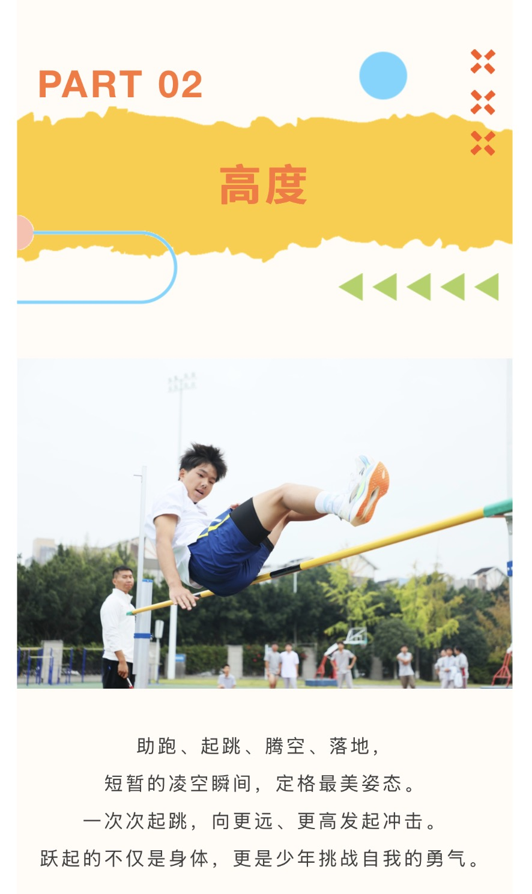
摄影纪实 / 胜利的喜悦
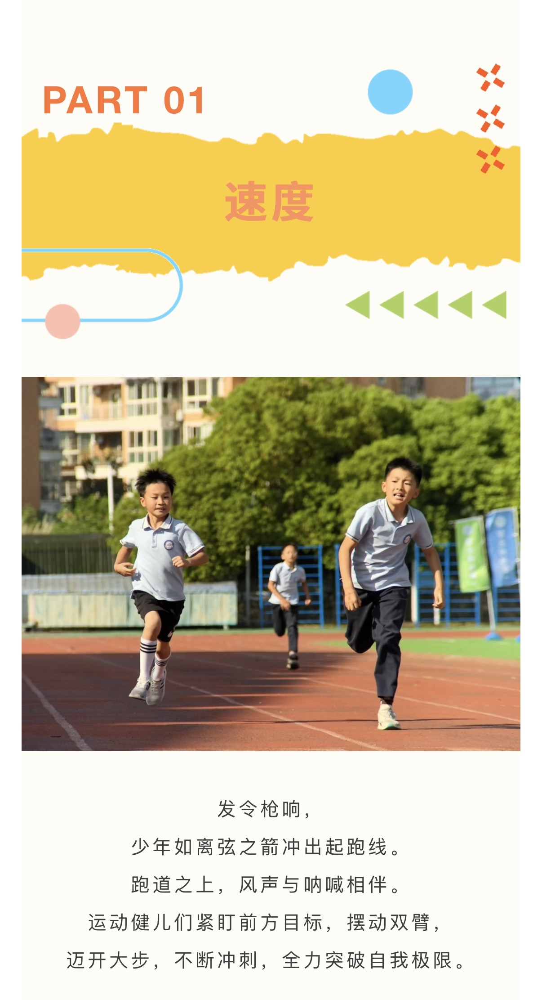
摄影纪实 / 胜利的喜悦
From Empathy to Accuracy. 从温情的校园纪实，到严谨的新闻现场
The Challenge / 知识壁垒与信息转译
在采访中国科学院成都生物研究所的新成果时，我敏锐地捕捉到科学家将“新型化学农药技术”类比为“女孩儿们用发酵淘米水可以剥落老旧角质”。这一绝妙的比喻，让我顺利将高深的化学知识转化为大众能听懂的语言。
这不仅仅是信息的降维，更是把老百姓与尖端科学连接起来的桥梁。它让科学不再高高在上，而是真正走进寻常百姓家。这也让我深刻意识到：传媒的职责，正是完成这从专业领域到大众认知的“最后一公里”翻译。
The Perspective / 城市品牌与民生视角
不同于校园宣传的受众细分，作为天府新区党群部指导的核心阵地，天府发布 承载着“国家级公园城市”形象塑造与新区动态传递的重任。在选题与撰写中，我兼顾宏观与微观：
一方面，用镜头与文字展现新区新风貌、新企业与前沿科技；另一方面，将硬核资讯转化为老百姓喜闻乐见的“吃喝玩乐一站式服务” 及文体活动指南。我致力于让政务新媒体褪去严肃外衣，成为连接城市发展与市民生活的桥梁。
The Philosophy / 新闻的严谨与客观
在撰写 AI 投融资路演等科技与财经新闻时，我学会了保持高度的准确性。例如，我明确区分了企业提出的“融资需求（funding sought）” 与最终实际获得的“投资结果（investment secured）” 。不将目标等同于事实，是新闻从业者的底线。
The Reality / 现场洞察与深度访谈
在新闻一线，时效性 是核心壁垒。这要求我在复杂的现场环境中，具备敏锐的素材捕捉力、高效的统筹力与高压下的极速成稿能力。
此外，专业的新闻采访拒绝浮于表面的泛泛而谈。面对硬核科技议题，我通过扎实的前期案头工作构建跨界知识储备，确保提问直击技术核心。这种建立在深刻认知上的“知识性访谈” ，是突破浅层叙事、挖掘新闻深度的关键。
The Execution / 核心发表作品
《人工智能前沿成果集中亮相，路演赋能产业升级》 负责现场采访与稿件撰写，准确传达约 6.7 亿元的融资需求，区分了技术与资本的语境。Published: 天府发布 | 记者：刘倩婷 唐茵芷 《全国首个“文旅行业云”，落地天府新区》 将行业黑话“B端/C端”转译为受众易懂的商业与游客视角，解释了数字化平台的服务逻辑。Published: 天府发布 | 记者：刘倩婷 实习生：唐茵芷 《传播非遗，这美好的生活不摆了》 走进乡村，把非遗带给世界。Published: 天府发布 | 记者：刘倩婷 实习生：唐茵芷
"科学并不遥远，传媒的力量不在于告诉别人‘科学家很伟大’，而在于消融因身份与领域被筑起的隔阂。 "
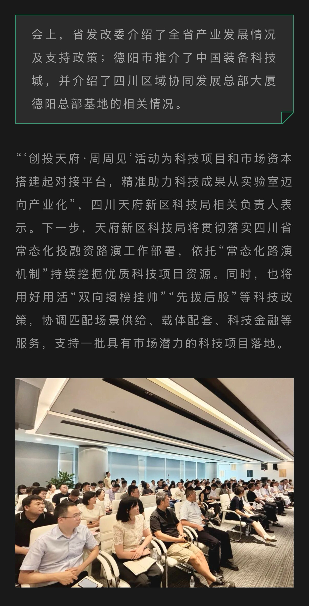
政务新闻 / 城市人文风貌
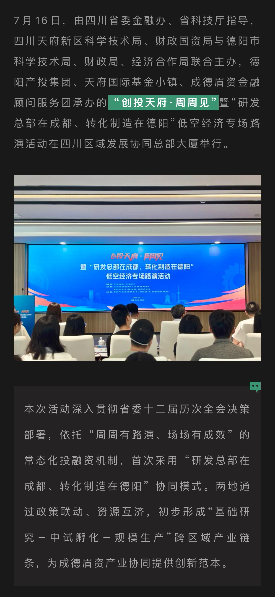
新闻报道 / 见报文稿截图
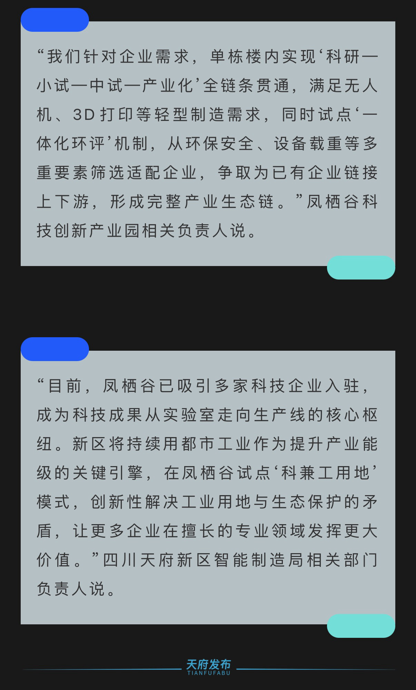
科技报道 / 融资路演专版
政务新闻 / 现代都市工业场景
政务新闻 / 现代都市工业场景
← Return to Room
Next: Audio →
01 / Voice Over & Narrative
作品名：《廿年》· 友情纪录片（担任文字编辑 & 配音）
隐匿自我，
纪录片配音，本质上是一场“声音的退让”。在《廿年》的创作中，我不仅完成了文字编辑，更担任了全片配音。我没有刻意去展现声音的技巧，而是先作为第一个观众，去洞察镜头背后的情感流动与人物羁绊。只有读懂了他们，我的声音才能成为画面最贴切的容器。
我选择以第三人称的视角，娓娓道来。在语速与呼吸的设计上，我刻意放缓了节奏，留出足够的“听觉呼吸感”。润物细无声，是我对这部作品声音叙事的最高追求。
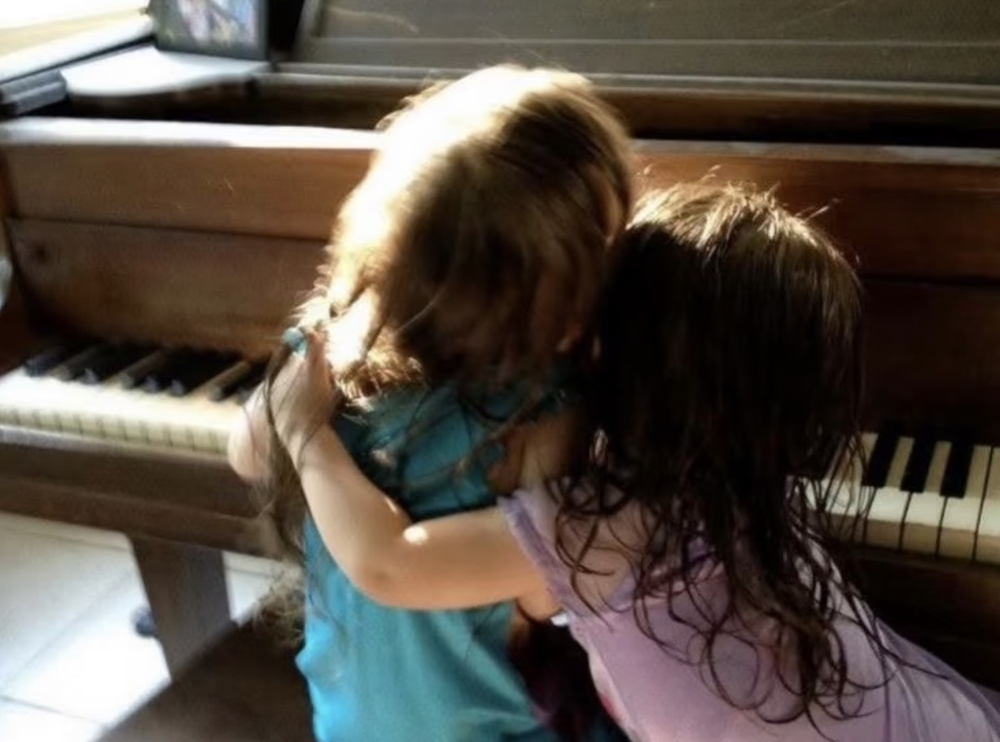
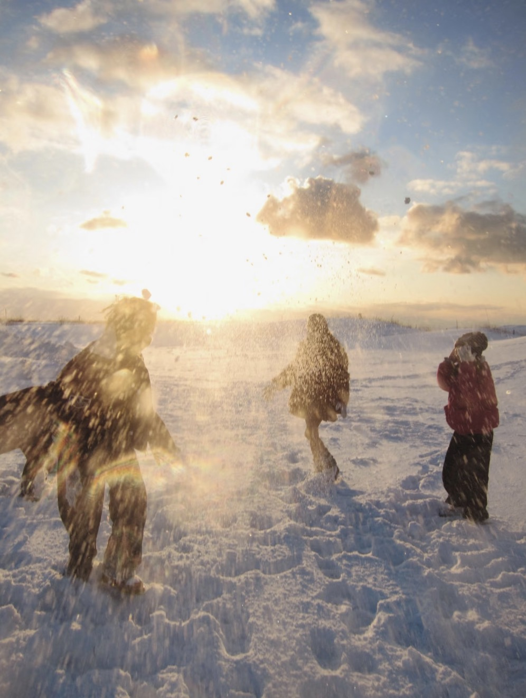
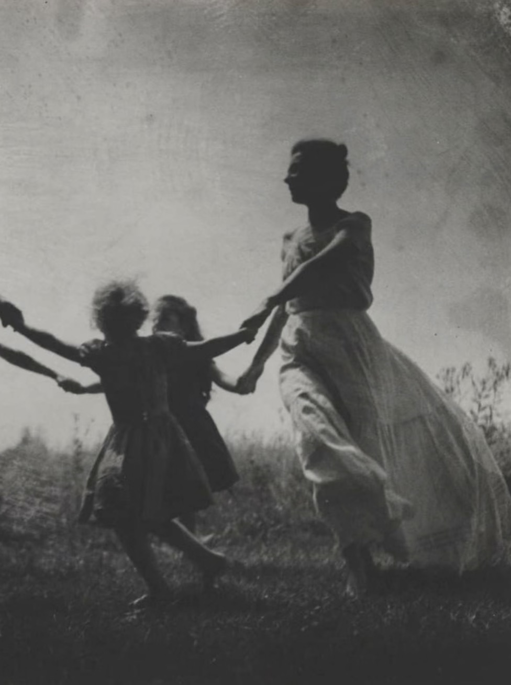
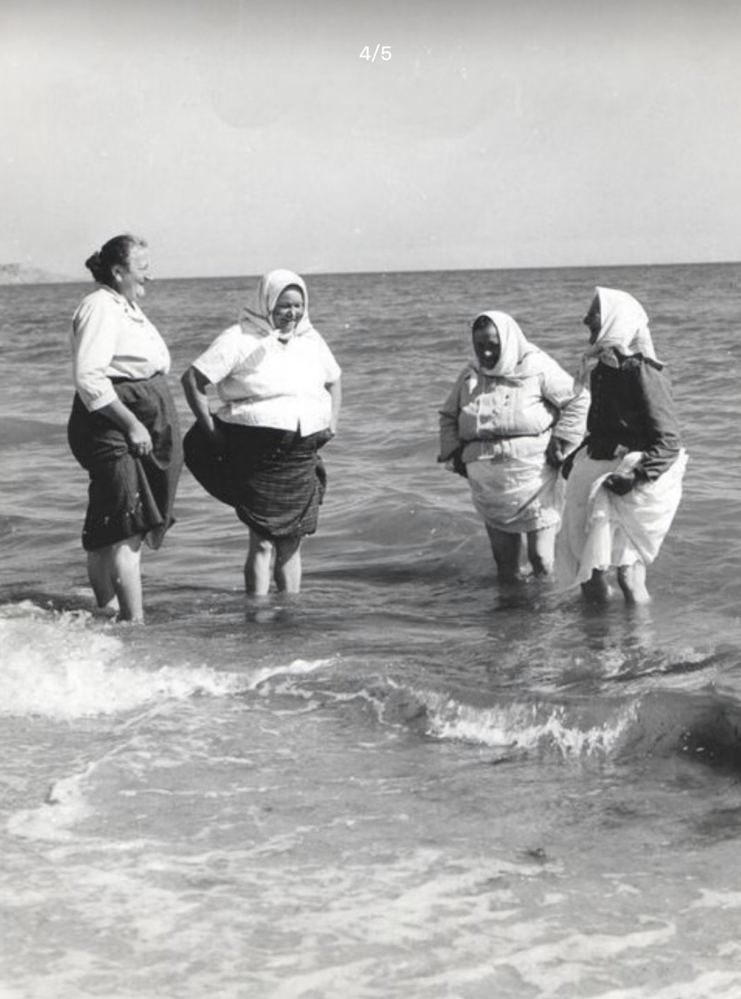
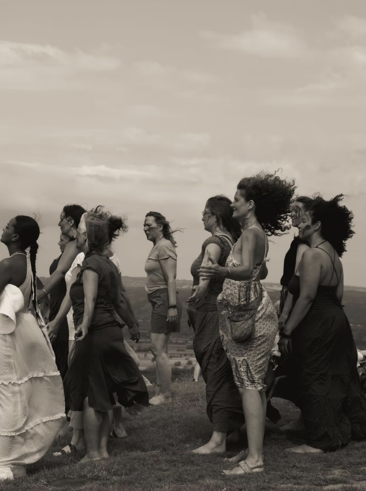
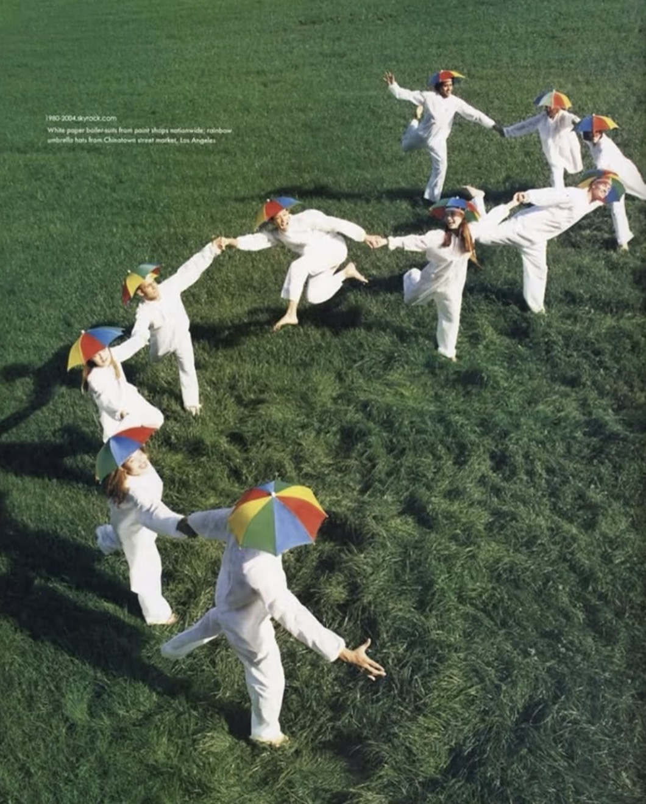
02 / SOUND DESIGN
声音，是听觉的造梦术。
The Art of Auditory Dreamweaving.
🎙️
人声主轨 (Voice) 浑厚男声 / 经济上行张力
🚄
城市基建 (Ambience) 钢筋水泥 / 地铁进站 / 高铁飞驰
Let the Sound Draw the City
在设计上，我并没有把所有声音揉杂在一起，而是进行了严格的层级划分：底层是钢筋混泥土的敲击声与从火车到高铁的轰鸣声，代表着城市大刀阔斧的基建跃迁；中层是地铁进站的风声，代表着流动的日常；高层是孩童的嬉闹声，那是城市的生命力。
当这一切被包裹在浑厚、充满张力的男声 之中时，一种独属于“经济上行时期”的欣欣向荣感，便会在听众脑海中油然而生。
▶ 试听多轨混音版
03 / Podcast
以声造梦，也以声寻己。
From creating the world to finding the self.
文字与音乐的
这是我独立撰稿与配音 的音乐播客。目前已完成六期节目，内容从华语乐坛横跨至欧美乐坛。
在剥离了歌手和作词人的标签化信息后，我更想做的是，把文字与音乐结合起来，带给听众不一样的体悟。我始终认为，音乐播客不应该仅仅是“歌曲推荐”，歌曲与歌词带给我的情感共振，才是节目的灵魂。
在每期内容中，我都会根据歌词的隐喻，结合歌手与作词人的真实经历，去做情感上的深度缝合。我希望我的文字，能让听众 在其中找到自己的影子，产生共鸣。
▶ 聆听我的播客
EP. 01 / 写给自己的歌
《不为谁而作的歌》
大众总在猜测这首歌究竟是写给爱情、亲情还是友情。但其实没有标准答案，每个人都可以代入自己的感情；如果找不到，也没关系。这也可以是一首，写给自己的歌。
EP. 04 / 向前看
《后视镜里的月亮》
汽车的挡风玻璃很大，后视镜却很小。我是说往前看比往后看更重要，也更需要勇气。
← Return to Room
Next: Editorial →
Warm & Engaging 校园新媒体：擅长捕捉微小的情感共鸣，用亲和、有温度的文字与受众建立连接。
Rigorous & Professional 官方新闻报道：准确拿捏政务与科技类稿件，在严肃语境下保持逻辑严密与信息清晰。
Bilingual Adaptation 跨文化转译：不止是翻译，更是根据英语受众的文化背景，进行意义重构与信息降维。
学生成长 | 寻梦星光 乐享成长
Published: 11 Sep 2026 | 华阳中学附属小学
对于刚刚迈入小学校园的"小萌新" 们，这不仅是一次课程的初体验，更是一场关于发现与热爱的启蒙之旅。
本次嘉年华活动，正是学校践行"学生成长第一" 育人理念的生动缩影。
A first look at school life through play and discovery
English Adaptation | Target: English-speaking parents
A course-experience carnival gave new primary pupils and their families a chance to explore school life together.
The school presented the carnival as an expression of its commitment to putting pupils' development first .
Editorial Strategy: Adapting for the Audience
"小萌新" (Internet slang)
"new primary pupils"
保留了欢迎的语调，同时清晰交代了年龄段，避免文化背景带来的理解障碍。
"学生成长第一" (Slogan)
"putting pupils' development first"
转化为自然流畅的英文行动表达，而不是生硬直译未经证实的官方口号。
Explaining a Specialised Digital Service
全国首个“文旅行业云”，落地天府新区
Original: 为B端企业提供降本增效解决方案，为C端游客打造...Adapted: For businesses , the proposed services include data integration... For visitors , an AI travel assistant called Xiaoyun is described as offering personalised itineraries.
编辑策略：将只有行业内人士懂的“B端/C端”缩写，直接替换为明确的“businesses”和“visitors”，降低阅读门槛，剥离未经独立验证的“全国首个”宣称。
Communicating an Investment Event Accurately
人工智能前沿成果集中亮相，路演赋能产业升级
Original: 现场融资需求约6.7亿元。Adapted: The companies presented financing needs of approximately RMB 670 million. This figure describes funding sought , rather than investment secured.
编辑策略：展现新闻的严谨性。明确区分“融资需求（sought）”与“实际获得投资（secured）”，不将提出的目标等同于已达成的事实。
← Return to Room
Connect Me →